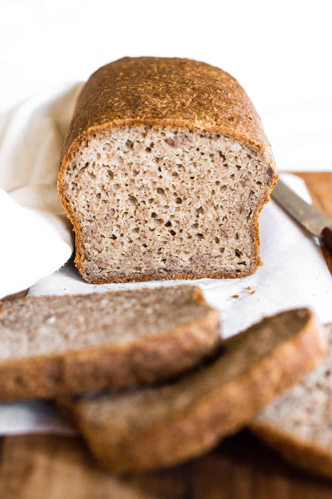

Gluten Free Bread

Forget dry and tasteless gluten free loafs from the store. Try this homemade Gluten Free loaf!
One of the most difficult things about giving up gluten is giving up on eating bread. It's an ubiquitous part of our diets from
dinner rolls to sandwiches to pizza dough, and more. This is a great option for those who want a healthy, whole-grain bread that's
easy to make and tastes great. There are no unhealthy starches, only whole-grain gluten-free flours.
This loaf is perfect for a lunchtime sandwich or a slice of toast in the morning. It holds up well to being buttered, and it's easy to
slice with a bread knife. All you need to get started is a selection of gluten-free flours, a kitchen scale and a gluten-free bread loaf.
Ingredients
- 175g Buckwheat Flour
- 150g Brown Rice Flour
- 100g Sorghum Flour*
- 25g Teff Flour*
- 25g Psyllium Husk Powder
- 1/2 tsp Sea Salt
- (optional) Any or all of Flax Seeds (whole), Poppy Seeds or Sesame Seeds, up to 3 - 4 tbsp per loaf
- 12g Active Dry Yeast
- 2 - 2 1/2 cups Warm Water
* While I always use Buckwheat and Brown Rice flours as the base of my load, the other two flours can be substituted, depending on taste or what you have on hand.
Other flours that work well include Millet, Quinoa, Casava, and Amaranth. Any whole-grain gluten-free flour should work, so feel free to experiment to find
combinations you love.
Steps
- Start by adding all dry ingredients into a large bowl and mixing together so they're thoroughly combined.
- Put 12g instant yeast in the bottom of a glass measuring cup that can hold at least 2 cups of water. Add 2 cups of warm water to the yeast while whisking with a fork. It should be warm to the touch but not too hot or it will kill the yeast. Let stand for 10-15 minutes until it gets foamy on top.
- While you're waiting, grease a loaf pan and dust with flour so the bread doesn't stick. Alternately, line a loaf pan with parchment paper.
- When the yeast is ready, pour the water into the dry ingredients and mix thoroughly. You can use a wooden spoon, or the bread hook on a stand mixer if you have access to one. If using the spoon, start with that and then switch to kneading with your hands once it starts to come together. If the dough seems dry,
add more water in small increments. Psyllium husk powder absorbed a lot of water and expands, so the loaf typically needs closer to 2 1/2 cups of water. Gluten-free bread dough should be slightly wetter than a "standard" gluten dough to help it rise, so don't worry if it seems too wet.
- Once it comes together, form the dough into a loaf shape and put it in the loaf pan to rise. Roughly 15-20 minutes later, preheat the oven to 450°F/232°C.
- Allow the dough to finish rising, usually no longer than 45 minutes in total. The speed the dough rises may depend on the ambient temperature in the room, so use your best judgement and add it to the oven when the dough is close to the top of the loaf pan. One quick tip: If the dough rises too high, it tends to slightly collapsed when it goes in the oven.
It takes some practice to catch it at the right time, but don't worry if it shrinks a little. It will still taste great!
- Put the loaf in the oven and bake for 1 hour.
- Remove from the oven and place the loaf on a cooling rack for at least 1 - 2 hours before you cut into it. This will ehlp the crumb stay together better.